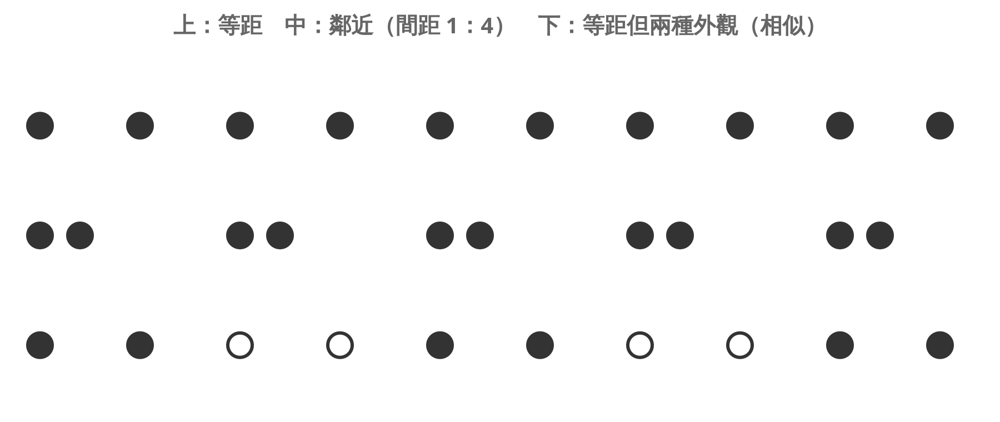
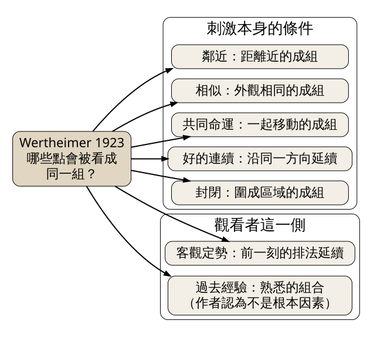
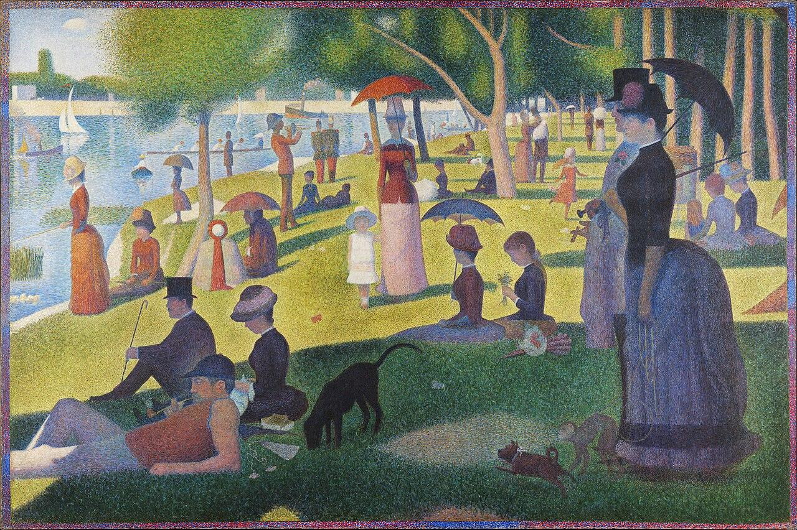

Max Wertheimer 在 1923 年用一排排圓點示範：眼睛會依「鄰近、相似、共同命運、好的連續、封閉」等條件，把零散的刺激自動分成一組一組。今天要練習用這幾個條件拆解一幅畫，說出畫裡的人為什麼看起來「是一群」。
史料（原典英譯） Wertheimer 1923 年那篇論文的第一段，寫的是一個人站在窗前。他說，照理論計算，眼前大概有 327 種亮度與色調，可是他看到的從來不是「327」，而是「天空、房子、樹」。他還補了一句：就算真的能數，房子 120、樹 90、天空 117 的分法也是眼前景象給定的，不會是 127、100、100 這種隨意切法。接著他舉兩張臉頰相貼的臉、一段旋律加伴奏為例，人聽到的是旋律與伴奏，不是 49 個音。這段文字收在 Ellis 編《A Source Book of Gestalt Psychology》（1938）第 71 頁起的英譯。
軼事（當事人自述） 格式塔心理學的起點通常算在 Wertheimer 1912 年的似動（phi）研究。Sarris 與 Michael Wertheimer（Max 的兒子）在 2001 年的文章裡記下一則 Wertheimer 後來常跟學生講的軼事：他搭火車經過法蘭克福附近時想到研究點子，於是中途下車，先在旅館房間用一個玩具視覺儀器試驗，再打電話到法蘭克福的心理學研究所，所裡派來當時還是助理的 Köhler，後來 Koffka 也加入。這是當事人回憶，不是當時的紀錄；各家轉述中玩具的種類（stroboscope、zoetrope、tachistoscope）說法不一，細節請當作軼事看待。
經典理論 Wertheimer，〈Untersuchungen zur Lehre von der Gestalt II〉，《Psychologische Forschung》第 4 卷，1923，頁 301–350。英譯為〈Laws of Organization in Perceptual Forms〉，收於 Ellis 編（1938）。
他問的問題很小：一排點同時出現，為什麼大家看成 ab/cd 兩兩一組，而不是 a/bc/d？他的第一個示範是一排點，間距輪流是 3 公釐與 12 公釐。所有人都把距離近的兩點看成一對（見圖 1 中排）。他特別指出，把點加多並不會讓這種自然分組變難，變難的只有那些硬湊出來的分法。

圖 1｜三排圓點。上排等距，看不出分組；中排間距 1：4，近的兩點成對；下排間距相同，只改外觀，實心與空心各自成組。示意，非實測數據。來源：本課程依 Wertheimer（1923）英譯本第 74–75 頁的點列示範繪製。授權：本課程自製圖解。
接著他把距離固定，只改點的顏色，分組立刻跟著顏色走（見圖 1 下排），這是相似。再讓一部分點同時往上移，一起移動的點會脫離原來的組，自成一組，他稱為「共同命運」（Factor of Uniform Destiny，或 Common Fate）。後面還有沿同一方向延伸的線容易被看成同一條（好的連續）、圍成區域的線容易被看成一塊（封閉），以及前一刻看到的排法會被帶到下一刻的「客觀定勢」（見圖 2）。

圖 2｜Wertheimer 1923 年討論的主要分組因素。來源：本課程依 Wertheimer（1923），Ellis 編英譯本（1938）第 71 頁起的內容繪製。授權：本課程自製圖解。
第八個因素是過去經驗或習慣。Wertheimer 承認有些知覺確實靠練習養成，但他反對把一切分組都歸給經驗：直線、直角、字與字的間距看起來都很「熟悉」，可是經驗說法必須逐一證明熟悉感真的先於分組，他認為這種說法把問題打發得太輕易。
實證研究 Wagemans 等七位學者在 2012 年《Psychological Bulletin》第 138 卷的回顧〈A century of Gestalt psychology in visual perception I〉整理了之後一百年的研究。Wertheimer 的論文主要是印在紙上的點與線示範，後人才開始量化。Kubovy 團隊用點陣實驗測出，鄰近分組只取決於點與點的相對距離；Kubovy 與 van den Berg（2008）發現鄰近與相似同時作用時，效果大致可以相加。回顧也列出後來新增的條件，例如 Palmer（1992）的「共同區域」：被同一個框框住的東西會成組；Palmer 與 Rock（1994）的「元素相連」：用線連起來的東西會成組。
Georges Seurat 的《A Sunday on La Grande Jatte — 1884》（1884–1886，油彩畫布，207.5 × 308.1 公分，芝加哥藝術博物館藏）畫的是巴黎近郊塞納河中一座島上的週日午後（見圖 3）。這幅畫比 Wertheimer 1912 年的研究早了二十多年，Seurat 不可能照著格式塔理論作畫。下面是拿 1923 年的條件回頭讀這張畫。

圖 3｜Georges Seurat，《A Sunday on La Grande Jatte — 1884》，1884–1886，芝加哥藝術博物館藏。來源：Georges Seurat，A Sunday on La Grande Jatte — 1884，1884–1886。授權：Public domain，來源頁面
先從點開始。畫面由無數細小色點構成，近看是一粒一粒的顏色。退後幾步，點消失了，你看到的是裙子、草地、狗。這跟 Wertheimer 窗前的 327 種亮度是同一件事：眼睛交出來的是物件，不是色點清單。
鄰近。左下角三個人：戴高帽的男人、戴帽的女人、躺著抽菸斗的男人。三人的身體幾乎互相碰到，背後是同一片陰影，周圍則被亮綠的草地隔開。你不會把高帽男人和右側樹下坐著的那群人看成一組，因為中間隔了一大段空地。
相似。找找畫裡的陽傘：中央上方一把紅色的、左側一把橘色的、中間一把藍色的、右邊大人物手上一把黑色的。它們彼此相距很遠，卻因為同樣的圓頂外形被眼睛串起來，視線會在傘與傘之間跳。人物的姿勢也一樣，大部分人以嚴格的側面朝向左方，這種方向上的相似讓整個畫面像一群人一起望著河。
好的連續。草地與河水的交界從左下往畫面上方中段延伸，岸邊的人沿著這條線排開，眼睛會順著它走進遠處。右側的樹幹一根根直立，間隔接近，形成另一條垂直的節奏。
條件互相拉扯。中間那位撐藍傘的女士和身旁低頭的女孩靠得很近（鄰近），但女孩的深色衣服又和左下那群人呼應（相似）。這種一個點同時被兩種條件拉住的地方，看畫的人會多停一下。Wagemans 等人的回顧也說，各條件是在競爭中決定結果，不是誰固定勝出。
Marius Petipa 編舞、Ludwig Minkus 作曲的芭蕾《La Bayadère》1877 年在聖彼得堡首演。第三幕「幽靈王國」（Kingdom of the Shades）裡，眾多幽靈從高處的山崖排成長長的行列走下舞台。看這段時可以用 Wertheimer 的條件檢查：舞者裝束相同（相似），前後間距相近（鄰近），在同一拍做同一個動作（共同命運）。三個條件疊在一起，觀眾眼中出現的是一條連續的長線，幾十個舞者退到後面。只要有一個人慢了半拍，她就會從那條線裡「掉出來」，被看成另一個單位。
誤解一：「整體大於部分之和」。這句話常被當作格式塔的口號。Koffka 在《Principles of Gestalt Psychology》（1935，頁 176）明白修正：他說更正確的講法是整體「something else than the sum of its parts」，因為「相加」在這裡根本沒有意義，有意義的是整體與部分的關係。（經典理論）
誤解二：格式塔法則是構圖規則。Wertheimer 列的是「因素」，而且他自己就示範了因素互相衝突的情況：讓一部分點移動，共同命運可以推翻原本由鄰近決定的分組。後來 Kubovy 團隊的實驗把分組描述為機率性的競爭。這些條件能幫你預測觀眾怎麼分組，但不會告訴你哪種分組比較「美」。（經典理論、實證研究）
誤解三：我們這樣分組只是因為看慣了。Wertheimer 把過去經驗列為因素之一，但明確反對用它解釋全部分組。圖 1 的點沒有任何意義、也不是熟悉的物件，分組照樣發生。（經典理論）
看（5 分鐘） 找一個人會停下來的地方：公車站、便利商店門口、市場攤位前。不要拍照，只看人怎麼聚成一群一群。記下兩組你一眼就覺得「是一起的」人，想想是因為站得近、穿得像，還是一起朝同一個方向走。
做（10 分鐘） 拿 12 枚硬幣（或瓶蓋、鈕扣）放在桌上，每一步用手機從正上方拍一張。
回顧（5 分鐘）
來源 | 類型 | 查核日期 |
Wertheimer, M.（1923）〈Untersuchungen zur Lehre von der Gestalt II〉英譯〈Laws of Organization in Perceptual Forms〉，收於 W. D. Ellis 編《A Source Book of Gestalt Psychology》（1938）。Internet Archive 掃描本 | 經典理論 | 2026-11-05 |
Koffka, K.（1935）《Principles of Gestalt Psychology》，頁 176。Internet Archive 掃描本 | 經典理論 | 2026-11-05 |
Wagemans, J. 等（2012）〈A century of Gestalt psychology in visual perception I: Perceptual grouping and figure–ground organization〉，《Psychological Bulletin》138(6), 1172–1217。PMC 全文 | 實證研究 | 2026-11-05 |
Sarris, V. & Wertheimer, Mich.（2001）〈Max Wertheimer's Research on Aphasia and Brain Disorders: A Brief Account〉，《Gestalt Theory》23(4)。PDF | 史料（含軼事） | 2026-11-05 |
Georges Seurat，《A Sunday on La Grande Jatte — 1884》圖檔與授權。Wikimedia Commons | 史料（圖片授權頁） | 2026-11-05 |
Pittsburgh Ballet Theatre，《La Bayadère》劇目介紹（首演年份、編舞、作曲、幽靈王國段落）。舞團頁面 | 史料 | 2026-11-05 |